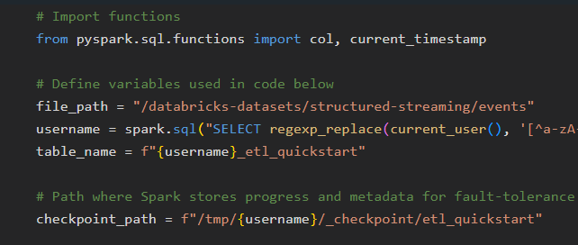
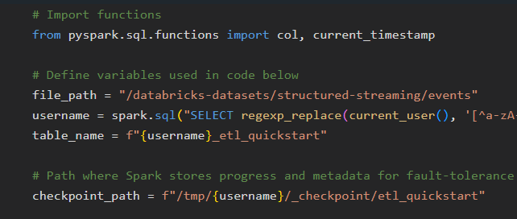
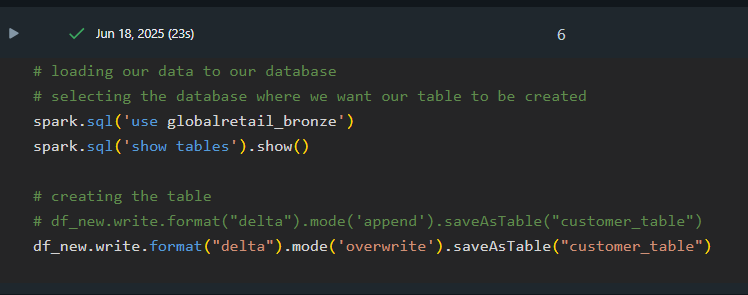

Weather ETL Pipeline using Apache Airflow, Python & Amazon S3
This project demonstrates the implementation of a modern Extract, Transform, Load (ETL) pipeline using Apache Airflow.
The pipeline fetches real-time weather data from the OpenWeatherMap API, transforms it into a clean format, and uploads
it directly to an Amazon S3 bucket, automating the end-to-end data flow using Airflow DAGs.
 

This project showcases the implementation of a real-time data ingestion pipeline using Databricks Auto Loader.
The pipeline is designed to efficiently process JSON data from a specified source, leveraging the capabilities of
Databricks for scalable and reliable data processing.

This project demonstrates the creation and population of a Bronze Layer in a medallion architecture data lake,
focusing on the ingestion and time-stamping of customer data using Apache Spark and Delta Lake within the
Databricks environment.


This project demonstrates a robust and scalable Silver Layer transformation pipeline using Apache Spark and Delta Lake
on Databricks. It implements incremental data loading, data quality enforcement, business rule transformations,
and upserts into a Delta table optimized for downstream analytics. The pipeline follows the medallion architecture,
processing raw Bronze-layer customer data into refined, query-optimized Silver-layer insights.